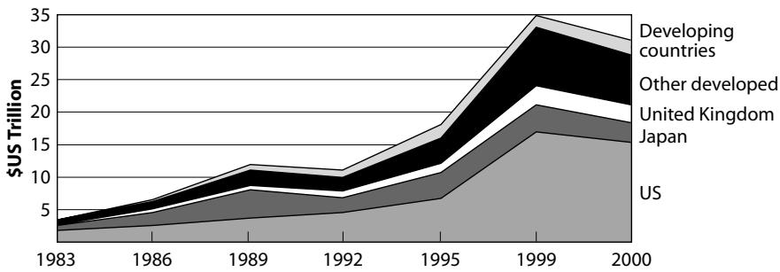
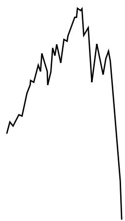

Preface
Like many other people, I find the stock market fascinating. The market’s potential for lavish gains and its playful character, made more attractive with the recent advent of the Internet, resonates with the gambler in us. Its punishing power and unpredictable temper make fearful investors look at it sometimes with awe, particularly at times of crashes. Stories of panic and suicides following such events have become part of market folklore. The richness of the patterns the stock market displays may lure investors into hoping to “beat the market” by using or extracting some bits of informative hedge.
However, the stock market is not a “casino” of playful or foolish gamblers. It is, primarily, the vehicle of fluid exchanges allowing the efficient function of capitalistic, competitive free markets.
As shown in Figure 0.1 and Table 0.1, the total world market capitalization rose from $3.38 trillion (thousand billions) in 1983 to $26.5 trillion in 1998 and to $38.7 trillion in 1999. To put these numbers in perspective, the 1999 U.S. budget was $1.7 trillion, while its 1983 budget was $800 billion. The 2002 U.S. budget is projected to be $1.9 trillion. Market capitalization and trading volumes tripled during the 1990s. The volume of securities issued was multiplied by 6. Privatization has played a key role in the stock market growth [51]. Stock market investment is clearly the biggest game in town.
A market crash occurring simultaneously on most of the stock markets of the world as witnessed in October 1987 would amount to the quasi-instantaneous evaporation of trillions of dollars. In values of

Fig. 0.1. Gross value of the world market capitalization from 1983 to 2000. From top to bottom, the developing countries are shown as the top strip, other developed countries (excluding the United States, Japan, and the United Kingdom), the United Kingdom, Japan, and the United States as the bottom strip. One trillion is equal by definition to one thousand billion or one million million. Reproduced with authorization from Boutchkova and Megginson [51].
October 2001, after almost two dismal years for stocks, the total world market capitalization has shrunk to a mere $25.1 trillion. A stock market crash of 30% would still correspond to an absolute loss of about $7.5 trillion dollars. Market crashes can thus swallow years of pensions and savings in an instant. Could they make us suffer even more by being the precursors or triggering factors of major recessions, as in 1929–33 after the great crash of October 1929? Or could they lead to a general
Table 0.1
The growth of world stock market trading volumes (1983–1998) (value traded in billions of U.S. dollars)
| Countries | 1983 | 1989 | 1995 | 1998 | 1999 |
| Developed countries | 1203 | 6297 | 9170 | 20917 | 35188 |
| United States | 797 | 2016 | 5109 | 13148 | 19993 |
| Japan | 231 | 2801 | 1232 | 949 | 1892 |
| United Kingdom | 43 | 320 | 510 | 1167 | 3399 |
| Developing countries | 25 | 1171 | 1047 | 1957 | 2321 |
| Total world | 1228 | 7468 | 10216 | 22874 | 37509 |
Note the Japan bubble that culminated at the end of 1990: around this time, the trading volume on Japanese stock markets topped that of the U.S. market! The bubble started to deflate beginning in 1990 and has lost more than 60% of its value. Also remarkable is the fact that the market trading volume of the United States is now more than half the world trading volume, while it was less than a third of it in 1989.
Reproduced with authorization from Boutchkova and Megginson [51].
collapse of the financial and banking system, as seems to have been barely avoided several times in the not-so-distant past?
Stock market crashes are also fascinating because they personify the class of phenomena known as “extreme events.” Extreme events are characteristic of many natural and social systems, often referred to by scientists as “complex systems.”
This book is a story, a scientific tale of how financial crashes can be understood by invoking the latest and most sophisticated concepts in modern science, that is, the theory of complex systems and of critical phenomena. It is written first for the curious and intelligent layperson as well as for the interested investor who would like to exercise more control over his or her investments. The book will also be stimulating for scientists and researchers who are interested in or working on the theory of complex systems. The task is ambitious. My aim is to cover a territory that brings us all the way from the description of how the wonderful organization around us arises to the holy grail of crash predictions. This is daunting, especially as I have attempted to avoid the technical, if convenient, language of mathematics.
At one level, stock market crashes provide an excuse for exploring the wonderful world of self-organizing systems. Market crashes exemplify in a dramatic way the spontaneous emergence of extreme events in self-organizing systems. Stock market crashes are indeed perfect vehicles for important ideas needed to deal and cope with our risky world. Here, “world” is taken with several meanings, as it can be the physical world, the natural world, the biological, and even the inner intellectual and psychological worlds. Uncertainties and variabilities are the key words to describe the ever-changing environments around us. Stasis and equilibrium are illusions, whereas dynamics and out-of-equilibrium are the rule. The quest for balance and constancy will always be unsuccessful. The message here goes further and proclaims the essential importance of recognizing the organizing/disorganizing role of extreme events, such as momentous financial crashes. In addition to the obvious societal impacts, the guideline underlying this book recognizes that sudden transitions from a quiescent state to a crisis or catastrophic event provide the most dramatic fingerprints of the system dynamics. We live on a planet and in a society with intermittent dynamics rather than at rest (or “equilibrium” in the jargon of scientists), and so there is a growing and urgent need to sensitize citizens to the importance and impacts of ruptures in their multiple forms. Financial crashes provide an exceptionally good example for introducing these concepts in a way that transcends the disciplinary community of scholars.
At another level, market crashes constitute beautiful examples of events that we would all like to forecast. The arrow of time is inexorably projecting us toward the undetermined future. Predicting the future captures the imagination of all and is perhaps the greatest challenge. Prophets have historically terrified or inspired the masses by their visions of the future. Science has mostly avoided this question by focusing on another kind of prediction, that of novel phenomena (rather than that of the future) such as the prediction by Einstein of the existence of the deviation of light by the sun’s gravitation field. Here, I do not shy away from this extraordinary challenge, with the aim of showing how a scientific approach to this question provides remarkable insights.
The book is organized in 10 chapters. The first six chapters provide the background for understanding why and how large financial crashes occur.
Chapter 1 introduces the fundamental questions: What are crashes? How do they happen? Why do they occur? When do they occur? Chapter 1 outlines the answers I propose, taking as examples some famous, or shall I say infamous, historical crashes.
Chapter 2 presents the key basic descriptions and properties of stock markets and of the way prices vary from one instant to the next. This frames the landscape in which the main characters of my story, the great crashes, are acting.
Chapter 3 discusses first the limitation of standard analyses for characterizing how crashes are special. It then presents the study of the frequency distribution of drawdowns, or runs of successive losses, and shows that large financial crashes are “outliers”: they form a class of their own that can be seen from their statistical signatures. This rather academic discussion is justified by the result: If large financial crashes are “outliers,” they are special and thus require a special explanation, a specific model, a theory of their own. In addition, their special properties may perhaps be used for their prediction.
Chapter 4 exposes the main mechanisms leading to positive feedbacks, that is, self-reinforcement, such as imitative behavior and herding between investors. Positive feedbacks provide the fuel for the development of speculative bubbles, preparing the instability for a major crash.
Chapter 5 presents two versions of a rational model of speculative bubbles and crashes. The first version posits that the crash hazard drives the market price. The crash hazard may skyrocket sometimes due to the collective behavior of “noise traders,” those who act on little information, even if they think they “know.” The second version inverts the logic and posits that prices drive the crash hazard. Prices may skyrocket sometimes, again due to the speculative or imitative behavior of investors. According to the rational expectation model, this outcome automatically entails a corresponding increase of the probability for a crash. The most important message is the discovery of robust and universal signatures of the approach to crashes. These precursory patterns have been documented for essentially all crashes on developed as well as emergent stock markets, on currency markets, on company stocks, and so on.
Chapter 6 takes a step back and presents the general concept of fractals, of self-similarity, and of fractals with complex dimensions and their associated discrete self-similarity. Chapter 6 shows how these remarkable geometric and mathematical objects enable one to codify the information contained in the precursory patterns before large crashes.
The last four chapters document this discovery at great length and demonstrate how to use this insight and the detailed predictions obtained for these models to forecast crashes.
Chapter 7 analyzes the major crashes that have occurred on the major stock markets of the world. It describes the empirical evidence of the universal nature of the critical log-periodic precursory signature of crashes.
Chapter 8 generalizes this analysis to emergent markets, including six Latin-American stock market indices (Argentina, Brazil, Chile, Mexico, Peru, and Venezuela) and six Asian stock market indices (Hong Kong, Indonesia, Korea, Malaysia, Philippines, and Thailand). It also discusses the existence of intermittent and strong correlation between markets following major international events.
Chapter 9 explains how to predict crashes as well as other large market events and examines in detail forecasting skills and their limitations, in particular in terms of the horizon of visibility and expected precision. Several case studies are presented in detail, with a careful count of successes and failures. Chapter 9 also presents the concept of an “antibubble,” with the Japanese collapse from the beginning of 1990 to the present taken as a prominent example. A prediction issued and advertised in January 1999 has been until now borne out with remarkable precision, correctly predicting several changes of trends, a feat notoriously difficult using standard techniques of economic forecasting.
Finally, chapter 10 performs a major leap by extending the analysis to time scales covering centuries to millenia. It analyzes the whole of U.S. financial history as well as the world economy and population dynamics over the last two millenia to demonstrate the existence of strong positive feedbacks that suggest the existence of an underlying finite-time singularity around 2050, signaling a fundamental change of regime of the world economy and population around 2050 (a super crash?). We are probably starting to see signatures of this change of regime. I offer three leading scenarios: collapse, transition to sustainability, and superhumans.
The text is complemented by technical inserts that sometimes use a little mathematics and can be skipped on first or fast reading. They are offered as supplements that go deeper into an argument or as useful additional information. Many figures accompany the text, in keeping with the proverb that a picture is worth a thousand words.
The story told in this book has an unusual origin. Its roots go all the way back, starting in the sixties, to the pioneering scientists, such as Ben Widom (professor at Cornell University), Leo Kadanoff (now professor at the University of Chicago), Michael Fisher (now professor at the University of Maryland), Kenneth Wilson (now professor at Ohio State University and the 1982 Nobel prize winner in physics), and many others who explored and established the theory of critical phenomena in natural sciences. I am indebted to Pierre-Gilles de Gennes (College de France and the 1991 Nobel prize winner in physics) and Bernard Souillard (then a director of research of the Ecole Polytechnique in Palaiseau, at the French CNRS-National Center of Scientific Research), for a most stimulating year (1985–86) in Paris as their postdoctoral fellow, where I started to learn to polish the art of thinking about critical phenomena and to apply this field to the most complex situations. I also cherish the remarkable opportunity of broadening my vision of scientific applications offered by the collaboration with Michel Lagier of Thomson-Sintra Inc. (now Thomson-Marconi-Sonars, Inc.), which began in 1983 during my military duty and continues to this day. His unfailing friendship and kind support over the last two decades have meant a lot to me.
In 1991, while working on the exciting challenge of predicting the failure of pressure tanks made of Kevlar-matrix and carbon-matrix composites constituting essential elements of the European Ariane 4 and 5 rockets and also used in satellites for propulsion, I realized that the rupture of complex material structures could be understood as a cooperative phenomenon leading to specific detectable critical behaviors (see chapters 4 and 5 for the applications of these concepts to financial crashes). The power laws and associated complex exponents and log-periodic patterns that I shall discuss in this book, in particular in chapter 6, were discovered in this context and found to perform remarkably well. A prediction algorithm has been patented and is now been used routinely with success in Europe on these pressure tanks going into space as a standard qualifying procedure. I am indebted to Jean-Charles Anifrani (now with Eurocopter, Inc.) and Christian Le
Floc’h of the company Aerospatiale-Matra (now EADS) in Bordeaux, France (the leader contractor for the European Ariane rocket) for a stimulating collaboration and for providing this fantastic opportunity.
A few years later, Anders Johansen, Jean-Philippe Bouchaud, and I realized that financial crashes can be viewed as analogous to “ruptures” of the market. Anders Johansen and I started to explore systematically the application of these ideas and methods in this context. What followed is described in this book. In this adventure, Johansen, now at the Niels Bohr Institute in Copenhagen, has played a very special role, as he has accompanied me first as my student in Nice, France for two years and then as my postdoc for two years at the University of California, Los Angeles. A significant portion of this work owes much to him, as he has implemented a large part of the data analysis of our joint work. I am very pleased for having shared these exciting times with him, when we seemed alone against all, trying to document and demonstrate this discovery. The situation has now evolved, as the subject is attracting an increasing number of scholars and even more professionals and practitioners, and there is a healthy debate characteristic of a lively subject, associated in particular with the delicate and touchy question of the predictability of crashes (more in chapters 9 and 10). I hope that this book will help in this respect.
I also acknowledge the fruitful and inspiring discussions and collaborations with Jorgen V. Andersen, now jointly at University of Nanterre, Paris and University of Nice, France, who is now working with me on an extension of the models of bubbles and crashes described in chapter 5. I should also mention Olivier Ledoit, then at the Anderson School of Management at UCLA. The first model of rational bubbles and crashes described in chapter 5 owes a lot to our discussions and work together. Other close collaborators, such as Simon Gluzman, Kayo Ide, and Wei-Xing Zhou at UCLA, are joining in the research with me on the modeling of financial markets and crashes. I must also single out for mention Dietrich Stauffer of Cologne University, Germany, who has played a key role as editor of several international scholarly journals in helping our iconoclastic papers to be reviewed and published. Witty, concise to the extreme, straightforward, and with a strong sense of humor, Stauffer has been very supportive and helpful. He has also been an independent witness to the prediction on the Japanese Nikkei stock market described in chapter 9.
I am also grateful to Yueqiang Huang at the University of Southern California, Per Jögi and Matt W. Lee at UCLA, Laurent Nottale of the Observatoire Paris-Meudon, Guy Ouillon at the University of Nice, and Hubert Saleur and Charlie Sammis at the University of Southern California for stimulating interactions and discussions on the theory and practice of log-periodicity. I am indebted to Vladilen Pisarenko of the International Institute of Earthquake Prediction Theory and Mathematical Geophysics in Moscow, who provided much advice and numerous insights on the science and art of statistical testing. I am grateful to Bil Megginson at the University of Oklahoma for help in getting access to data on the world market capitalization. Cars Hommes, at the Center for Nonlinear Dynamics in Economics and Finance at the University of Amsterdam, and Neil Johnson at Oxford University, U.K., acted as referees on a preliminary version of the book. I thank them warmly for their kind and constructive advice. I thank Jorgen Andersen and Paul O’Brien for a critical reading of the manuscript. I met Joseph Wisnovsky, the executive editor of Princeton University Press, at a conference of the American Geophysical Union in San Francisco in December 2000. From the start, his enthusiasm and support has been an essential help in crystallizing this project. Wei-Xing Zhou helped a lot in preparing the fractal spiral picture on the cover, and Beth Gallagher performed a very careful and much appreciated job in correcting the manuscript.
I gratefully acknowledge the 2000 award from the program of the James S. McDonnell Foundation entitled “Studying Complex Systems.” Last but not least, I am grateful for the support of the French National Center for Scientific Research (CNRS) since 1981, which has ensured complete freedom for my research in France and abroad. Since 1996, the Institute of Geophysics and Planetary Physics and the Department of Earth and Space Sciences at UCLA has provided new scientific opportunities and collaborations as well as support.
I hope that at least some of the joy, excitement, and wonder I have enjoyed during this research will be shared by readers.
Didier Sornette
Los Angeles and Nice
December 2001
Why Stock Markets Crash
This page intentionally left blank
